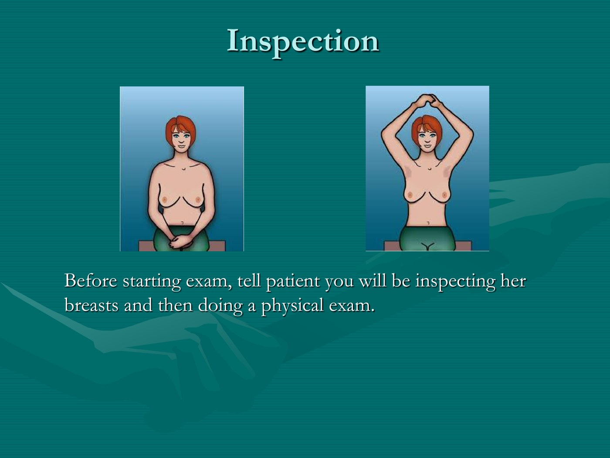
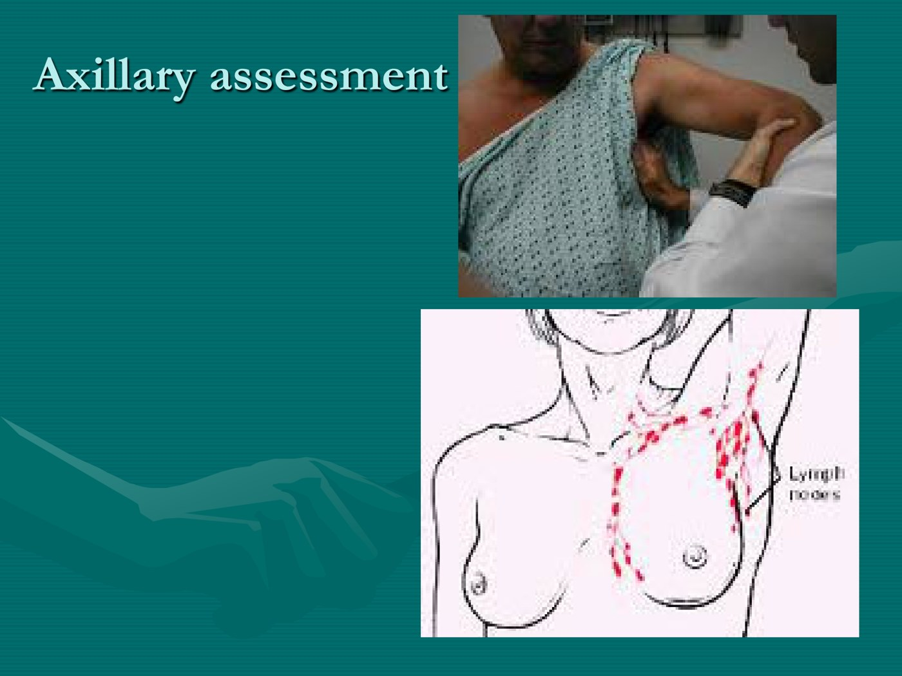
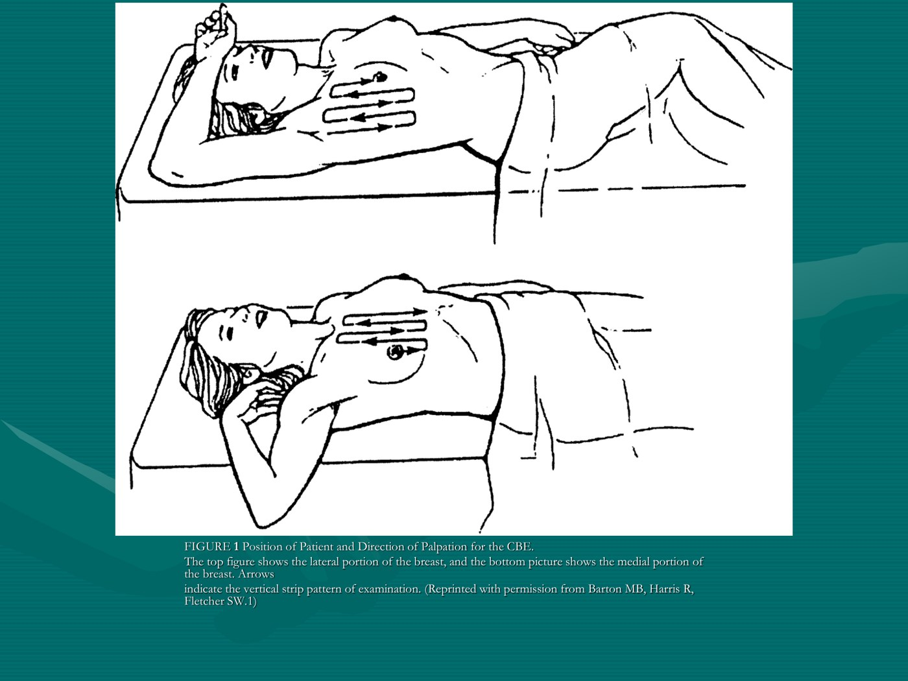
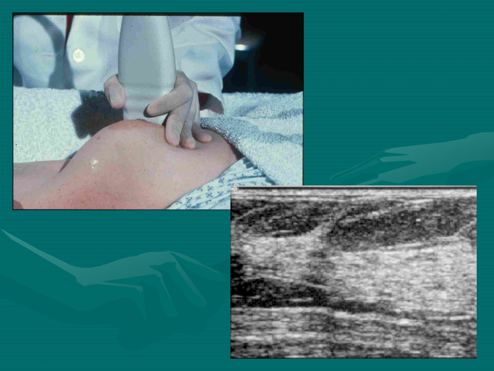
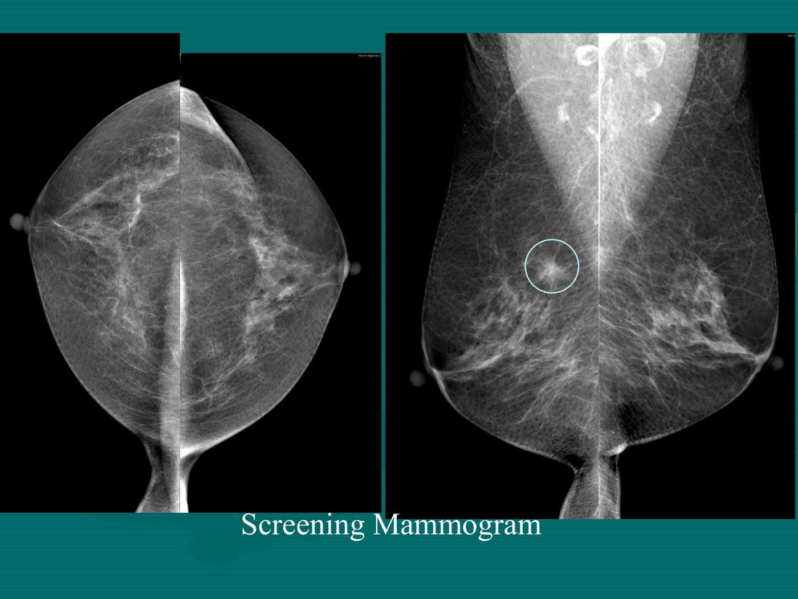
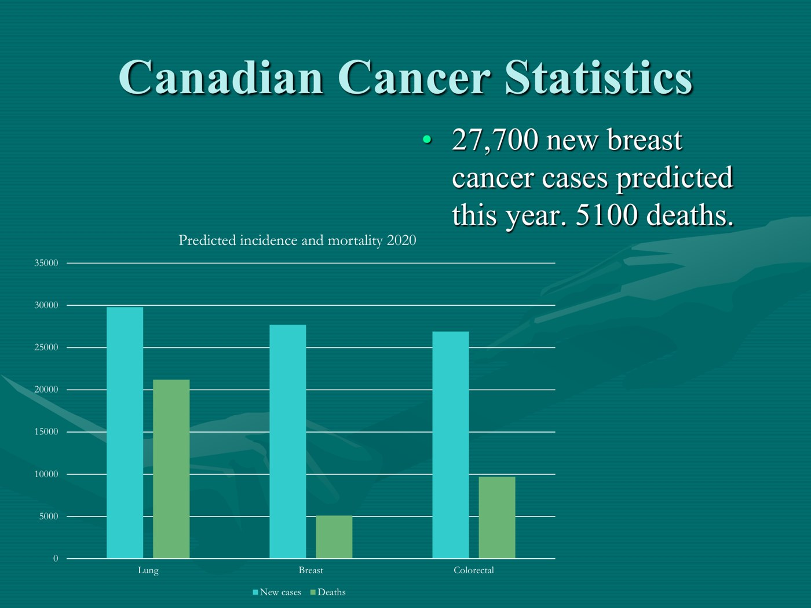
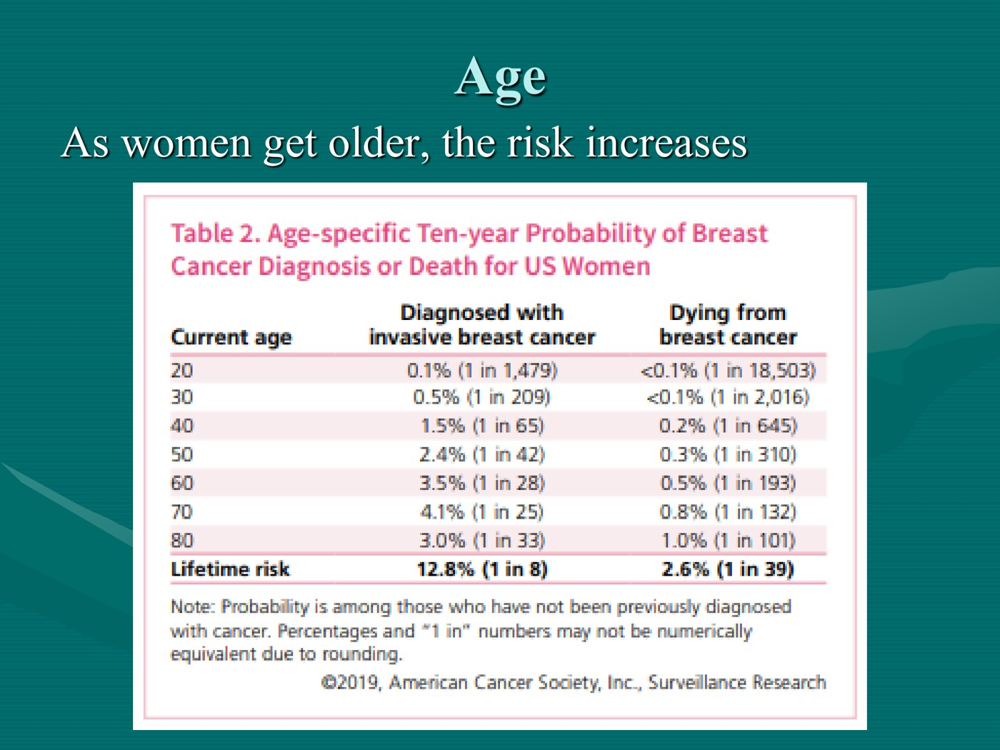

Approach to Common Breast Problems
- Three complaints, and that's the whole lecture: "Doc, I feel a lump" · "Doc, my breast is sore" · "Doc, I have nipple discharge."
- The older the woman, the more likely any breast complaint is serious. His single most repeated line.
- Worrisome lump: single · hard · immovable · irregular borders · >2 cm. Skin change, peau d'orange and nipple retraction are late findings — if you can see them you have probably missed a palpable lesion for a while.
- Under 35 start with ultrasound; over 35 start with mammogram. Dense young breast tissue reads poorly on mammography.
- Breast pain is usually benign (>45% of women, usually hormonal) — but 8% of breast cancers present with pain, so it is not zero.
- Pathologic nipple discharge: unilateral · single duct · spontaneous · bloody or serous · with a mass · age >50. The commonest cause is a papilloma; malignancy is only 5–10%.
- Screening: OBSP, age 50–74, biennial, self-referral. Lifetime risk 1 in 8. High risk → annual.
- Mammography is not benign. 25% mortality reduction in 50–74 — bought with false positives, unnecessary biopsies and overdiagnosis.
Learning Objectives
- Summarize breast symptoms commonly presenting to the family physician.
- Demonstrate an approach (history, physical exam, investigations) to these symptoms.
- Outline investigations for common breast symptoms.
- Explain treatment strategies.
- Contrast symptoms of benign problems versus those concerning for cancer.
- Recommend screening needs for women over 50 years of age.
Dr. Andrew Hemphill, family physician at Byron Family Medical Centre doing low-risk obstetrics and family medicine, 53 minutes in five parts. He credits Dr. Jo-Anne Hammond for the original presentation. The pathology behind all of it is 5.6; both feed Tuesday's Breast Cancer panel at 1:30pm.
Who Walks In, and the Men First
Men are rarer and more straightforward, so he clears them out of the way before starting.
Prevalence
| Cases in Canada (2020) | ~27,400 estimated, of which 240 were in men |
| Ratio | Consistently about 100 women diagnosed for every 1 man |
| Trend | He has updated this slide yearly and the number creeps up every year — the male total went 215 → 230 → 240 over successive years |
Discrepancy in the source: the deck's prevalence slide says 27,400, while its Canadian Cancer Statistics slide says 27,700 new cases and 5,100 deaths for the same year. Both are reproduced here as they appear.
Breast Problems in Men
| Newborns and pubertal males | Gynecomastia in adults | |
|---|---|---|
| How common | Very common | Commonest age 50–69 |
| Features | Usually unilateral, soft, under the nipple | Palpable mass |
| Course | 85–90% resolve within 2 years | — |
| What to do | Reassure, and tell them to come back if it doesn't go away. Refer to a surgeon if it extends past the areola or is cosmetically unacceptable | Mammography or ultrasound can be done. If imaging reports gynecomastia it is benign — but still find out why |
Imaging confirming gynecomastia settles that it isn't cancer. It does not tell you the cause. Ask about medications — the usual culprits are spironolactone (a potassium-sparing diuretic), finasteride (used in BPH) and anabolic steroids or testosterone. Patients are often not forthcoming about the last group, so ask specifically.
Then bloodwork: thyroid, liver, kidney. Hold on to that trio — the same three organs turn up in the galactorrhea workup later on this page. A surgeon should review the mass if imaging or the story is concerning.
"Doc, I Feel a Lump"
The commonest of the three, and the one with the medicolegal tail.
Breast Lumps in Women
| 1 in 10 women aged 40–69 will present with a breast lump over a 10-year period |
| Breast cancer is common — but benign breast lumps are far more common. Roughly 10% of palpable masses are cancer |
| Failure to diagnose breast cancer is the leading malpractice claim in the US (missed or late diagnosis), and a frequent source of college complaints in Canada |
Not to frighten you into over-investigating — but because of how these claims arise. In his words, if a patient feels she wasn't listened to, or that you didn't appreciate a lump she could feel, that is where the complaint comes from. Taking the concern seriously is itself part of the management.
The history
Age · location · how it was found · when it was found · skin changes · change in size · change with the menstrual cycle · other lumps in the axilla · family history.
Largely the history you would take for a lump anywhere — with two additions specific to the breast: the menstrual cycle, and the axilla.
The Clinical Breast Exam
The CBE is clinician dependent, and large trials comparing groups who got regular screening breast exams against groups who did not showed no mortality benefit. So the Canadian Task Force on Preventive Health Care recommends against performing CBE for screening.
That is not the same as never examining a breast. When a patient comes to you with a concern, you examine. The recommendation is about asymptomatic screening only.
Inspection

Hands at the sides, on the hips, then over the head. Looking for skin changes, symmetry, contours and retraction. He notes hands pushing on the hips is the best single position. Tell the patient what you are about to do first.
The axilla is the single most important nodal region in a patient with a breast lump — ahead of parasternal, supraclavicular, subclavicular or cervical. Central (chest wall) · pectoral (anterior axillary fold) · subscapular (posterior axillary fold) · lateral (along the humerus) — plus infraclavicular and supraclavicular nodes.Palpation

Supine, one breast exposed at a time. Cover the rectangle: clavicle to inframammary fold, midsternal line to posterior axillary line. Use the pads of the 2nd, 3rd and 4th fingers, light, medium and deep pressure, in small concentric circles.There are three described patterns — clock-face, spiral out from the nipple, and vertical strips. The slide is explicit: vertical strips are better than pie or spiral, and that is what is now taught. His broader point matters more: pick a system and use the same one on every patient, so you never forget a region.
And remember the tail of Spence — breast tissue is not a circle, it is a circle with a tail extending up toward the axilla. Examine it.
| Situation | What changes |
|---|---|
| Describing a mass | Location · size · shape · consistency · border · tenderness · mobility. Record it, and determine the next investigation |
| Nipple discharge | Compress the areola — but only if she has complained of discharge. Describe colour, consistency, volume and which part of the nipple it comes from |
| Post-mastectomy | Inspect and palpate along the scar and examine the axilla thoroughly, with attention to the upper outer quadrant. Be gentle — radiation can leave the area sensitive. Same rectangle |
| Breast augmentation | Implants sit behind the breast tissue, so the same techniques apply; deep palpation just feels spongier |
| Before you start | Offer a chaperone. Offering is essentially mandatory; the patient accepting is not |
Benign or Worrisome?
| Worrisome — classic findings of cancer | Reassuring |
|---|---|
| Single lesion | Smooth lumps are usually benign |
| Hard | Breast pain is more commonly benign — though 8% of breast cancers present with some pain |
| Immovable | Nipple discharge is uncommon with breast cancer |
| Irregular borders | |
| Size greater than 2 cm |
Skin changes, peau d'orange and nipple retraction are late findings and rarely seen. His blunt version: if you can find those features, you have probably missed a palpable lesion for a while. They are still signs of breast cancer — they are just not the ones that catch it in time.
Differential for a palpable lump
Normal or fibroglandular breast tissue (in young women the glandular tissue constantly fluctuates in size and firmness) · breast cyst · fibroadenoma · breast cancer, about 10% of palpated masses. The pathology of each is in 5.6.
Following Up and Investigating a Lump
| Patient | What to do |
|---|---|
| Pre-menopausal, benign history and exam | Follow up after the next menstrual cycle. If it resolved → reassure, return if it comes back or worsens. If it did not resolve → investigate |
| High risk, or post-menopausal | Investigate immediately — don't wait a cycle |
| Age | First test | Why |
|---|---|---|
| Under 35 | Ultrasound | Breast tissue is too dense for mammography to work well, and the risk is too low to justify a radiation-containing test |
| Under 35 and high risk | MRI | Better than ultrasound when you are genuinely worried about someone young |
| Over 35 | Mammogram first, ± ultrasound | — |
For a woman presenting with a new painless lump, the first pass is: breast examination · axillary examination · a general neck, chest and abdominal examination · mammogram · ultrasound of the breast (both imaging tests, once she is over 35).
What does not belong in an initial assessment: CA-125 or HER2/neu testing — tumour markers are not screening or diagnostic tools here, and HER2 is something the pathologist reports on a cancer that has already been diagnosed (5.6). Nor CT or MRI, nor nipple discharge cytology in a woman with no discharge, nor a pelvic examination, serum β-hCG, microbiology swab or urinalysis. The temptation to order broadly is exactly what this module's concept check is testing against.

Breast ultrasound — the layers visible are subcutaneous tissue, glandular tissue and pectoral muscle.
A screening mammogram that found a small spiculated mass (circled). Compare the two sides — that asymmetry is the finding."Doc, My Breast Is Sore"
Very common, usually hormonal, and the whole assessment turns on one question.
Breast Pain
More than 45% of women will complain of breast pain at some point. It is usually caused by normal hormonal changes.
| History | |
|---|---|
| Unilateral or bilateral? | Does it fluctuate with her periods? |
| Medications — specifically HRT, the birth control pill, tamoxifen | Gynecologic events — pregnancy, birth, miscarriage |
| Strenuous or vigorous exercise | Other systemic or local findings · skin abnormalities |
On examination, do the clinical breast exam as above and extend it into a musculoskeletal exam — tenderness over the ribs or sternum, and pain on moving the arm suggesting the shoulder or pectoral muscles.
Cyclical — two thirds of cases. A hormonal response in which the ducts and stroma become reactive. It starts in the luteal phase and ends with menstruation.
Non-cyclical — now you are thinking mastitis or another infection, medication-induced pain, Cooper's ligament stretch in a large pendulous breast, or extramammary causes in the chest wall, ribs or sternum that the patient simply describes as breast pain.
Treating cyclical pain
| Measure | Evidence as he presents it |
|---|---|
| Low-fat, high-complex-carbohydrate diet | A New York study found prolactin levels fell on this diet; a later Canadian randomised study found women with chronic breast pain did substantially better on it than on a normal diet |
| Stopping smoking | Smoking worsens breast pain. Cleveland Clinic work showed nicotine and cigarette smoke raise epinephrine in breast tissue, driving the cyclical pain |
| Support bras and compresses | First-line conservative measures |
| Acetaminophen | Simple analgesia |
| Stopping offending medications | OCP, HRT, tamoxifen — the drugs that alter hormone levels |
| Cutting coffee | An old wives' tale. Reducing caffeine has not actually been shown to improve breast pain |
Mastitis — the Management
| Step | |
|---|---|
| Antibiotics first | Cephalexin is the usual first choice — good against skin organisms, and Staph aureus is the commonest organism in mastitis |
| Keep feeding | Lactating women should continue breastfeeding and fully empty the breast — it makes the infection resolve faster |
| If antibiotics don't work | Ultrasound, then consider ultrasound-guided aspiration, and consider IV antibiotics |
| Incision and drainage | Last choice — not the go-to |
| If redness or a mass persists | Biopsy and mammogram. If things look fine, repeat imaging later |
Anywhere else on the body — abdomen, arm — incision and drainage is the standard management of an abscess. In the breast it is not. The order is antibiotics → IV antibiotics → ultrasound-guided aspiration → I&D last.
And the reason persistent redness earns a biopsy rather than another antibiotic course: inflammatory carcinoma is defined by looking exactly like diffuse acute mastitis (see 5.6). A "mastitis" that will not clear is the presentation you must not explain away.
Investigating breast pain: under 35 with a normal exam, no further testing — it is most likely hormonal or musculoskeletal. Suspicious findings send you down the breast lump pathway. Pain without a lump can still be referred to the Breast Assessment Centre, but will be triaged less urgently than an obvious lump. And remember: the older the woman, the more likely breast pain reflects important pathology.
"Doc, I Have Nipple Discharge"
The first split is physiologic versus pathologic — and "pathologic" does not mean "dangerous."
Physiologic vs Pathologic Discharge
Physiologic discharge is galactorrhea — driven by a chemical or hormonal imbalance, not related to pregnancy or lactation. It can be a variety of colours, constant or intermittent, usually bilateral, and usually from several ducts; it is expressed with nipple compression.
Pathologic discharge means it comes from a lesion within the breast. He is emphatic that this does not mean something dangerous is going on — the commonest cause is a benign papilloma. "Pathologic" describes the source, not the seriousness.
| Causes of galactorrhea | |
|---|---|
| Nipple stimulation | Including clothing that constantly rubs the nipples |
| Pituitary disease | Chiefly hyperprolactinemia (see 3.5) |
| Drugs | Agents that suppress dopamine, such as methyldopa |
| Chest wall injury or thoracic surgery | Damage to intercostal nerves produces a neural feedback response that raises prolactin |
| Other medical conditions | Chronic kidney disease · hypothyroidism · cirrhosis · stress |
Note the overlap he points out himself: kidney, thyroid and liver appear in both the gynecomastia workup and the galactorrhea workup. Learn them once.
| Features that say the discharge is from a lesion |
|---|
| Unilateral · from a single duct · spontaneous · bloody or serous · associated with a mass · patient over 50 |
Investigating it
Inspect the nipple — Paget's disease is a skin disease of the nipple that can also produce discharge (5.6). Then periareolar ultrasound and mammography, which are the mainstays, plus biopsy techniques as needed. Galactography (ductography) exists but he notes it is not much used in London.
| Cause | |
|---|---|
| Papilloma — essentially a wart within the duct | The most common cause of pathologic nipple discharge. Benign |
| Duct ectasia · fibrocystic change | Also benign |
| Malignancy — ductal carcinoma, inflammatory breast cancer | Only 5–10% of nipple discharge |
Risk Factors and Screening
The longest section, and the one with the numbers he most wants remembered.
Epidemiology
| Lifetime risk of a woman developing breast cancer: 1 in 8. His one "remember this" number — the one on the billboards |
| Breast cancer makes up about 25% of all female cancers |
| Five-year disease-free survival: 88% — it was 81% when he inherited the slides, and about 58% in the 1960s |
| Lifetime overall survival: 66% |

Read the pairs of bars. Lung has more cases and far more deaths. Colorectal has fewer cases but almost twice the deaths of breast. Breast has a big case burden and a comparatively good survival — and since under half of lung cancers are in women, breast dominates the female cancer picture.The Ontario Breast Screening Program
He cannot praise it enough as a family doctor, and the reason is structural rather than clinical.
| Provincially funded, age 50–74, for women deemed normal risk |
| Self-referral — the patient books herself from her 50th birthday |
| CAR-accredited mammography facilities with a consistent reading radiologist |
| Two-view screening mammogram |
| Automatically books assessment and follow-up investigations; linked to the Breast Assessment Programs |
Because the patient enters and moves through the system without needing you. An abnormal screen goes straight to the Breast Assessment Centre for further imaging, and on to biopsy if needed, without referrals bouncing back and forth. His point: if he is away on vacation for two weeks, nothing gets delayed and nothing slips through the cracks.
| Screening myth | Reality |
|---|---|
| #1: "Mammograms are painful" | Only 7–10% of women put it in the very uncomfortable or excruciating category. Most describe it as uncomfortable — "a really tight squeeze" |
| #2: "The radiation causes cancer" | It may increase risk — by about one cancer per million screens. A very low dose next to, say, an abdominal CT |
Who Gets Screened, and How Often
| Risk | Screening |
|---|---|
| Usual risk | Age 50–74, biennial mammogram |
| High risk | Screen annually |
| What makes someone high risk |
|---|
| One first-degree relative under 50 with breast cancer |
| Two first-degree relatives with breast cancer at any age |
| One first-degree relative, or a personal history, of ovarian cancer |
| Family history of male breast cancer |
| Pathologic diagnosis of atypical ductal or lobular hyperplasia, radial scar, phyllodes tumour or LCIS |
| Breast density greater than 75% |
Every entry on that pathology row comes straight out of 5.6 — the biopsy report is what moves a woman from biennial to annual screening.
The Benefit, and What It Costs
| Benefit | |
|---|---|
| 25% reduction in mortality for 50–74 year olds | Population-based projection — you need to screen about 70% of the population to realise it |
| Per 1000 women screened, age 50–69 | Per one death prevented |
|---|---|
| 282 false positives | Number needed to screen ~721 |
| 37 unnecessary biopsies | 204 false positives and 26 unnecessary biopsies |
Assuming screening reduces breast cancer mortality by 15% and that overdiagnosis and overtreatment run at 30%, then for every 2000 women invited for screening throughout 10 years: one will avoid dying of breast cancer, 10 healthy women will be treated unnecessarily for a cancer that would never have been diagnosed, and more than 200 women will experience important psychological distress, including anxiety and uncertainty, for years, because of false-positive findings.
Drop the start age to 40 and you get more false positives and a higher number needed to screen. Extend the end age to 75–80 and you would need to screen fewer women per death prevented — but you would increasingly be diagnosing cancers in elderly women who would not have died of them. 50 to 74 is where that trade-off is judged acceptable.
His conclusion, and it is worth keeping: "mammography is not benign." It generates lumpectomies, mastectomies, biopsies, extra imaging and time off work.
Accuracy note: the lecture audio states overdiagnosis as "3%", which is a mis-transcription — the source (Gøtzsche & Jørgensen, Cochrane Database Syst Rev 2013;6:CD001877, which the deck cites) says 30%, and the rest of the quoted numbers only make sense with 30%. Verified against the Cochrane review, 25 Sept 2026.
Risk Factors
His framing: the most important risk factors are things you can't do anything about.
| Factor | |
|---|---|
| Gender | The biggest one — about 99% of breast cancers are in women |
| Age | Risk climbs steeply — see the table below |
| Family history | Two first-degree relatives: RR 4–5 · one first-degree relative: RR 2–3 · one second-degree relative: RR 1.2–1.5 |

Age-specific ten-year probability. A 20-year-old has a 1 in 1,479 chance of diagnosis in the next decade; a 50-year-old 1 in 42; a 70-year-old 1 in 25. The bottom row is the number to carry: lifetime 1 in 8 diagnosed, 1 in 39 dying. American Cancer Society, 2019 — a US table, and he notes it holds closely for Canada.The gap between being diagnosed and dying is the real story in that table. At every age the probability of diagnosis is several times the probability of death, and lifetime it is 1 in 8 versus 1 in 39. That ratio is what "becoming a good prognosis tumour" looks like in numbers.
| Minor risk factors — RR 1.1 to 1.3 |
|---|
| Lack of exercise · BMI > 30 · more than 2 drinks per day · early menarche and late menopause · no children and no breastfeeding · birth control pill for more than 5 years · HRT with estrogen and progesterone |
This is the one he says you will have to discuss with patients. When the studies are dissected, the association sits with the older triphasic formulations and the progestin they used. The modern pills, including the Tri-Cyclen Lo available in Canada, do not contain that progestin. Even then it is a small increase in relative risk — probably not a worrisome risk factor for a woman on a modern pill. Contraceptive counselling is 4.3.
Genetic Risk and Testing
| 5% of all breast cancers have an identifiable gene mutation |
| Most of those genes govern either DNA repair or regulation of cell growth — BRCA1 and BRCA2 |
| Other syndromes matter too, notably Li-Fraumeni (p53) |
| Lifetime risk for female BRCA carriers: 55–85% breast, 15–65% ovarian |
| Send for genetic testing if… |
|---|
| Patient under 35 |
| Patient under 50 with two first- or second-degree relatives, at least one of whom is under 50, or one with bilateral breast cancer, or one with serous ovarian cancer |
| Three or more family members with breast or ovarian cancer at any age |
| Male breast cancer |
| Breast cancer in an Ashkenazi Jewish patient |
| BRCA-negative patient under 35 with family members with sarcoma, brain tumours, leukemia or adrenocortical carcinoma — looking for Li-Fraumeni |
1. Test the affected relative, not the worried one. If you are the family member of someone you think carries a BRCA mutation, it should be that person who gets tested — a result from the affected patient is far more informative.
2. Timing is deliberate. Gene testing in an affected patient is done after life insurance has been obtained, childbearing is complete, and social relationships are stable. The genetic counsellors are explicit about getting those in order first — a diagnosis of a serious genetic condition has consequences beyond medicine.
He also asked a genetic counsellor why the criteria exclude so many women. The answer: when one in eight women gets breast cancer, you will have an aunt or a cousin with it by chance alone. A family history has to be unusually strong or unusually early to mean something genetic.
| Management for a BRCA carrier | Effect |
|---|---|
| Prophylactic mastectomy | 90% reduction |
| ± Oophorectomy | 50% reduction |
| Intensive screening | Annual MRI and mammogram — more sensitive than mammogram or ultrasound in these patients, but high false-positive rates leading to biopsy |
| Chemoprevention | Tamoxifen — roughly 50% reduction |
The Canadian Task Force on Preventive Health Care
| Population | Recommendation | Strength |
|---|---|---|
| Women 40–49 | Recommend NOT screening with mammography; the decision is conditional on the value the woman places on the benefits and harms | Conditional; low-certainty evidence |
| Women 50–74 | Recommend screening with mammography every 2 to 3 years; again conditional on her values. Ontario uses every 2 years | Conditional; very-low-certainty evidence |
| Not at increased risk | Recommend NOT using MRI, tomosynthesis or ultrasound to screen | Strong; no evidence |
| Clinical breast exam | Recommend NOT performing CBE to screen | Conditional; no evidence |
| Breast self-examination | Recommend NOT advising women to practise it | Conditional; low-certainty evidence |
The Effects on the Patient
A new objective this year, and the part that is hardest to revise from a table.
What a Diagnosis Actually Does
| Domain | |
|---|---|
| Cosmesis | The breast can be a real part of a woman's identity. Mastectomy — prophylactic or therapeutic — affects appearance, confidence and security. Special bras and reconstructive surgery are available, and unlike cosmetic augmentation, reconstruction after mastectomy or a large lumpectomy is covered |
| Genetic risk | A BRCA2 carrier's children each have a 50% chance of inheriting it. Nothing is done while they are teenagers, so the parent carries the question of whether and when to tell them |
| Insurability | You want insurance before a diagnosis is on your chart — which he points out applies to you, securing disability and life insurance now |
| Early menopause | Prophylactic bilateral oophorectomy forces menopause, sometimes in a woman's mid to late thirties, affecting libido and relationships (see 5.3) |
| Mental health | Often healthy young or middle-aged women hit with a bad diagnosis out of nowhere. Profound effects — but also a genuine culture of resilience, with walks, runs and peer networks where patients find people who have been through it |
| Support | LHSC and the breast assessment program have social workers, psychologists and health specialists attached to the clinics. Family physicians do a lot of the counselling and navigation |
Summary
| Breast complaints are common |
| Most breast lumps are not cancers |
| The older the woman, the more likely any breast complaint is serious |
| The older the woman, the greater the risk of breast cancer |
| If at normal risk, screen every two years from 50 to 74; if at high risk, screen yearly |
Built from Dr. Andrew Hemphill's "Approach to Common Breast Problems" module — five recorded parts (20, 7, 4, 14 and 4 min) and its slide deck, which credits Dr. Jo-Anne Hammond as its original author. Figures are slides from that deck; the remainder of the deck is text, so it is presented here as tables. The auto-transcript was rough: the axilla as "the SLA", OBSP as "obesity" and "ESP", tail of Spence as "tail spout" and "tail expense", Cooper's ligament as "creepers ligament", cephalexin as "self-collection", incision and drainage as "I, Andy", galactorrhea as "galactic rior" and "Korea", galactography as "galactic rhythm impact orthography", phyllodes as "by lowndes tumour", spiculated as "speck speculated", tomosynthesis as "tumor synthesis", Li-Fraumeni as "likely from a p53" and "leave from any type", infra- and supraclavicular as "insulet infra clover ocular and superclinic killer" — so all terms, drugs and numbers here come from the slides. Two source issues are flagged in the text: the deck gives both 27,400 and 27,700 as the year's Canadian case count, and the audio's "3%" overdiagnosis figure is a mis-transcription of the Cochrane review's 30%, verified against Gøtzsche & Jørgensen, Cochrane Database Syst Rev 2013;6:CD001877 on 25 Sept 2026 — the only claim on this page checked outside the module. The module's three concept checks were audited against this page on 27 Sept 2026 and the facts they test are all stated above — the questions themselves are not reproduced. The underlying pathology is 5.6.